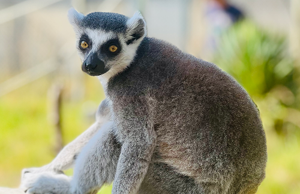

ワオキツネザルの習性
夜行性のため昼寝が多い
ワオキツネザルはもともと夜行性。暗くなると活発に動き、昼間は比較的のんびり過ごしています。動物園では、昼間に気持ちよさそうにウトウトしたり、みんなでくつろいでお昼寝している姿がよく見られます。そんな姿を見ていると、こっちまでリラックスしてしまいそう。静かな時間を大切にするワオキツネザルたちの生活リズムを感じながら、そっと見守るように観察してみてください。
お昼は日向ぼっこ
太陽が好きなワオキツネザルたちは、晴れた日のお昼には「太陽礼拝ポーズ」とも呼ばれる日向ぼっこをすることがあります。お腹を伸ばし、お尻を広げて光を浴びる姿は、まるで瞑想しているかのよう。手を広げて座る姿勢は、体操選手のリモもあえるそうです。このポーズは多くの動物園でも見られ、ワオキツネザルのチャームポイントのひとつとして人気です。
ワオキツネザルの魅力
体もふわふわ！
体もびっくりするほどふわふわ！モフモフの塊が跳ね回る姿に、癒されること間違いなしです。
乗ってくれる！触れてくれる！！
一部の施設では人懐っこいワオキツネザルが肩に乗ってくれたり、優しく触れ合えたりする体験も！
しっぽふわふわ！
白黒リング模様の長～いしっぽがチャームポイント！ふわふわで思わず触れたくなっちゃう。

イケメン！！
キリッとした顔立ちに、まるでモデルのような姿勢。カメラを向ければ完璧なキメ顔をくれるかも？